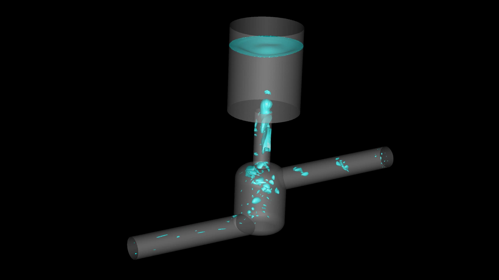

MULTIPHASE FLOW / GENERIC DEMONSTRATOR
Air separation through geometry and flow
Connect transient interface motion with cumulative air routing and repeatable CFD setup.
A visible physical mechanism, a defined transport metric and a reusable automation workflow.
VOF · Buoyancy · Surface tension · Python
Explore the engineering story ↗